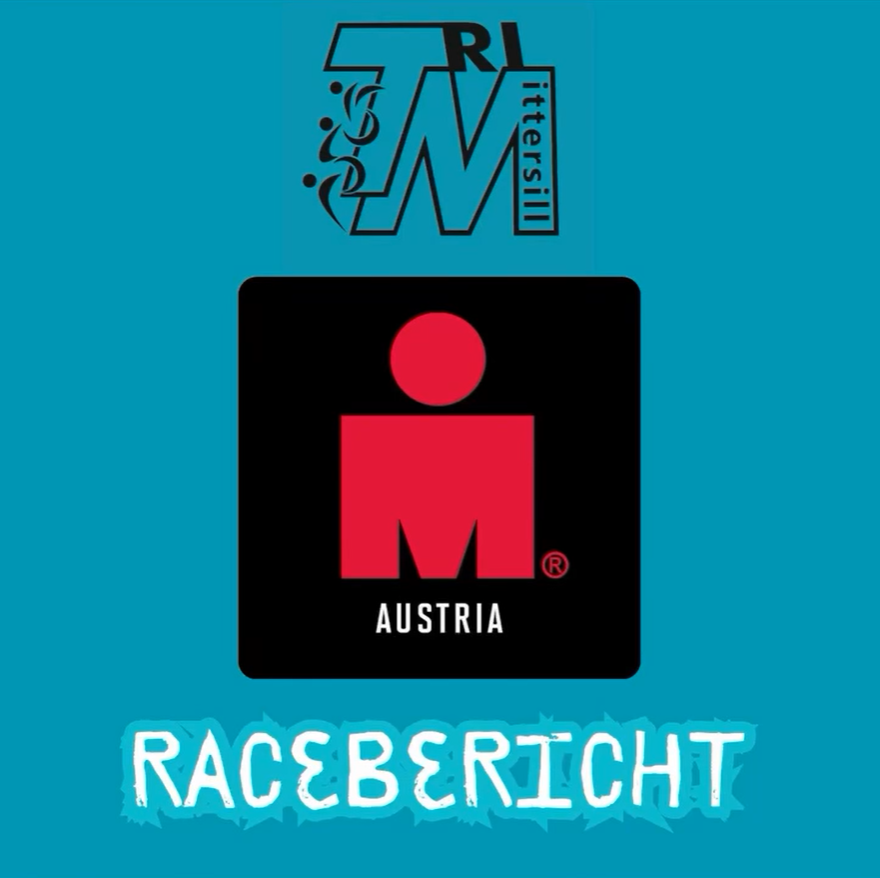

Ironman 70.3 Zell am See

Herzlichen Glückwunsch an alle Teilnehmer des Ironman 70.3 in Zell am See! Es ist beeindruckend zu sehen, wie viel Engagement und Durchhaltevermögen jeder Einzelne gezeigt hat. Hier sind die Ergebnisse, die die großartigen Leistungen der Athleten widerspiegeln:
-
Robi hat mit einer beeindruckenden Zeit von 4:34:05 erneut seine Klasse unter Beweis gestellt und sich zudem den hervorragenden 2. Platz in seiner Altersklasse gesichert.
-
Jürgen konnte sein Ziel, die 5-Stunden-Marke zu knacken, mit einer Zeit von 4:54:36 erfolgreich verwirklichen. Eine großartige Leistung, die seine harte Arbeit belohnt hat.
-
Thomas, unser schneller Doktor, hat das Rennen in 5:24:16 absolviert und zeigt, dass er nicht nur im medizinischen Bereich, sondern auch sportlich fit ist.
-
Florian hat mit einer Zeit von 5:51:50 ebenfalls ein starkes Ergebnis erzielt.
-
Doris hat das Ziel mit einer Zeit von 5:43:44 erreicht und beweist, dass sie eine echte Kämpferin ist.
-
Viveka, die mit ihrer Schwimmleistung sehr zufrieden ist, hat das Rennen in 6:37:45 gefinished und zeigt damit, dass Durchhaltevermögen und Entschlossenheit sich auszahlen.
Staffel: Berni, der Schwimmer, konnte die Herausforderung mit einer hervorragenden Zeit von 37:05 meistern und übergab dann an Wolfgang. Dieser zeigte seine Stärke auf dem Rad und absolvierte die 90 km lange Strecke in beeindruckenden 2:43:36. Eine großartige Teamleistung, die zeigt, wie gut die einzelnen Disziplinen harmonieren!